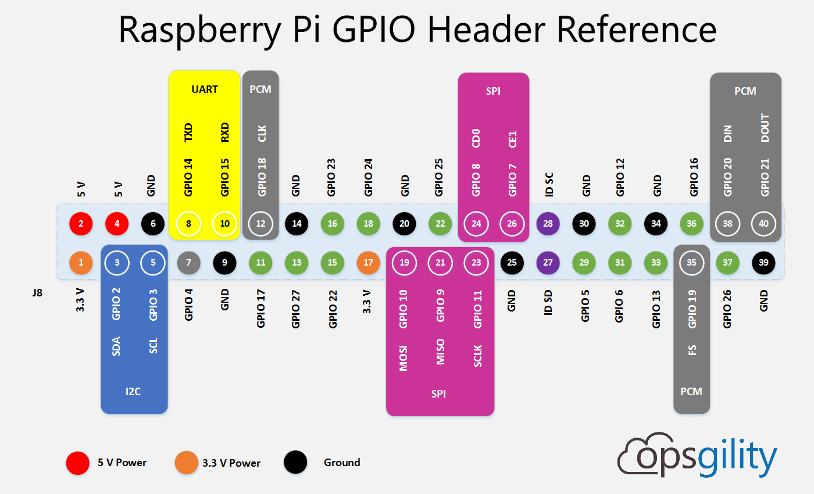

Programming, robotics, traveling
Это страничка будет обновляться по мере того, как я буду использовать те или иные технологии. Заметка больше является моим справочником.

Хорошая статья про работу с I2C на Raspberry Pi skpang.co.uk/blog/archives/575.
pygpiod и spi
Принцип работы адресной светодиодной ленты заключается в последовательной передачи кодированных байт информации через светодиоды с определенным периодом. Соотвественно для управления такой лентой требуется кодирование и модуляция сигнала. Сделать это с помощью дерганья обычных GPIO невозможно. Однако, есть несколько вариантов управления умной лентой. Я попробовал пару: с помощью ШИМ и SPI.
Библиотека для управления через ШИМ – DPOH-VAR/pi-strip-websocket. Использует nodejs-websocket 1.4.1, rpi-ws281x-native 0.8.1.
Управление черезе WebSocket:
ws = new WebSocket("ws://192.168.1.223:4440/LED3")
ws.onopen = function(){
setInterval(function(){
var a = new Uint8Array(357).fill(0, 0, 356).map(() => Math.random()*255);
ws.send(a);
},500)
}
ws.send(new Uint8Array([255,100,100,100,255,100,255,255,255,255,100,100,0,255,255]));
ws.send(new Uint8Array([100,0,0,0,100,0,0,0,100,100,0,0,0,100,0]));
ws.send(new Uint8Array([255,255,255,255,255,255,255,255,255,255,255,255,255,255,255]));
Подача радномного цвета на светодиоды:
ws.onopen = function(){
setInterval(function(){
ws.send(new Uint8Array([
Math.random()*255,
Math.random()*255,
Math.random()*255,
Math.random()*255,
Math.random()*255,
Math.random()*255,
Math.random()*255,
Math.random()*255,
Math.random()*255,
Math.random()*255,
Math.random()*255,
Math.random()*255,
Math.random()*255,
Math.random()*255,
Math.random()*255
]));
},500)
}
Для включения этого способа нужно включить SPI в raspi-config. Для коммутирования ленты используется вывод MOSI (GPIO10).
Основная библиотека – joosteto/ws2812-spi, также она использует doceme/py-spidev.